人物生平概述 (Executive Overview)
梁业海（Albert Leong Yeh Hae）系马来西亚彭亨州关丹卓越华社领袖、文化实业家与政民公共事务代表。他拥有英国西英国布里斯托大学法律系荣誉学士学位（LL.B Hons）及EMBA企业管理硕士学位，具备卓越的现代法商治理逻辑与实业战略经营造诣。作为MBS Books & Stationery（MBS 文具书业企业）第二代管理人，他承继家族创业积淀，锐意驱动商业模式创新，于关丹打造占地 4.6 万平方尺、被彭亨州务大臣誉为“全马最大综合概念书局”的标志性文化生活综合体 MBS World，并将企业网络稳健扩展为横跨彭亨与登嘉楼多达 26 间分行的大型连锁体系，长期作为马来西亚教育部指定课贷图书（SPBT）核心供应商，并获现任彭亨州务大臣拿督斯里旺罗斯迪亲切接见，深度参与《彭亨关怀折扣卡》等州级政企惠民项目。在政务与社会公职领域，他曾受时任内阁部长拿督斯里赛夫丁·阿都拉委任，出任马来西亚外交部华裔事务官（前任），充当内阁与华社基层间的桥梁；并兼任彭亨关丹燕窝工会副主席、马来西亚-中国总商会彭亨分会商务主任，参与接待中国驻马大使欧阳玉靖阁下正式拜会，深入推动“一带一路”文教落地与经贸互通。在社会公益层面，他在疫情救济、前线抗疫原料捐输、华校助学及监狱司法关怀等领域笃行不倦，展现了深厚的家国情怀与企业公民责任担当。
核心职务与专业履历 (Core Appointments & Qualifications)
企业版图：MBS Books & Stationery 综合实力与政企联动 (Corporate Footprint)
MBS Books & Stationery 历经稳健发展与现代化升级，现已跃居为马来西亚东海岸规模最大、最具公信力的综合性文教用品、图书批发与零售连锁企业。总部及现代化大型中央仓储物流基地座落于关丹英迪拉马哥打（Bandar Indera Mahkota），构建了辐射东海岸双州的强大物流供应链网络：
- 广泛的东海岸商业网络：分行与零售网点多达 26 间，战略性进驻彭亨与登嘉楼各大核心商圈，包括关丹丹那布爹 MBS World 旗舰书城、关丹东海岸广场（East Coast Mall）、阿亦布爹、北根、文德甲、淡马鲁、劳勿、而连突、文冬、甘马挽（朱盖）及瓜拉登嘉楼等；
- 深耕教育与政企集采体系：长期作为马来西亚教育部指定课贷图书（SPBT - Skim Pinjaman Buku Teks）核心供应商，常年为东海岸数百所中小学、高等院校、政府部门直供教科书、办公设备与教学仪器；
- “全渠道零售与电商生态”：全面融合实体体验店、批发直供业务及线上主流电商平台（Shopee 等），实现文教产品线一站式高效交付。
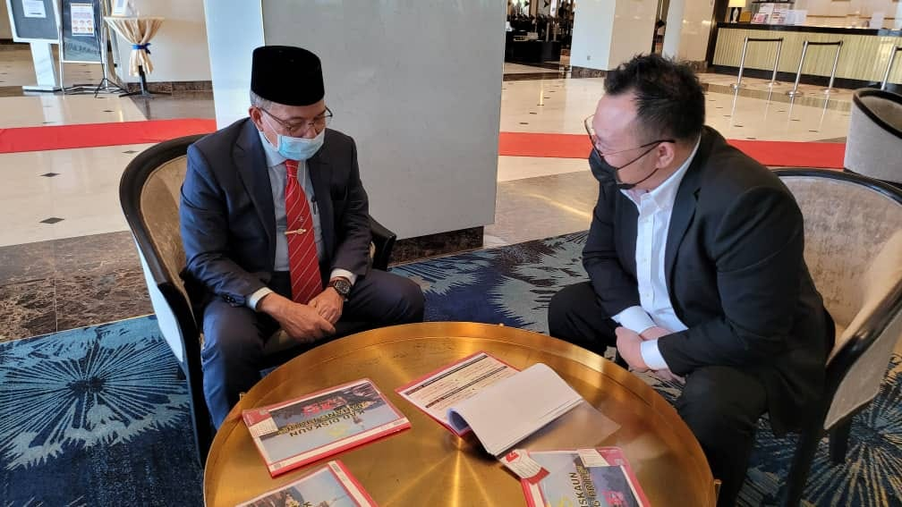
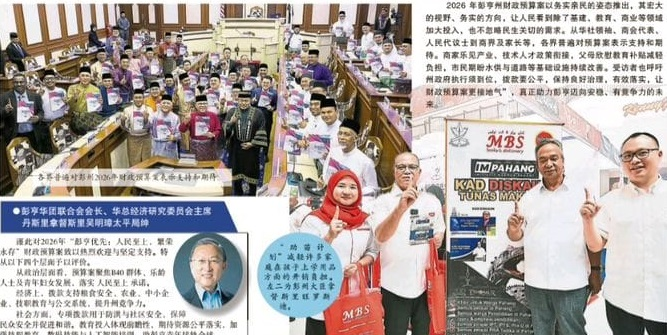
梁业海作为东海岸文教商界领军代表，多次代表 MBS 文具书业企业与彭亨州政府最高行政长官对接协同。在与彭亨州现任州务大臣拿督斯里旺罗斯迪·旺依斯迈（YAB Dato' Sri Wan Rosdy Wan Ismail）的双边闭门会晤及州级财政预算案发布中：
- 落地《彭亨关怀1折扣卡（Kad Diskaun Pahang 1Prihatin）》与“助苗计划”：MBS 积极响应州政府倡导的惠民让利政策，作为州内主要文教企业率先加盟折扣卡福利网络，为彭亨州公务员、基层家庭与学生群体提供实质文教折扣，切实减轻民众生活与教育开支负担；
- 高规格政企常态沟通：彰显了 MBS 在州政府施政规划中备受倚重的文教实业地位，成为地方民营企业服务社会福祉的合作范式。
三大专题媒体报道聚焦 (Three In-Depth Media Reports)
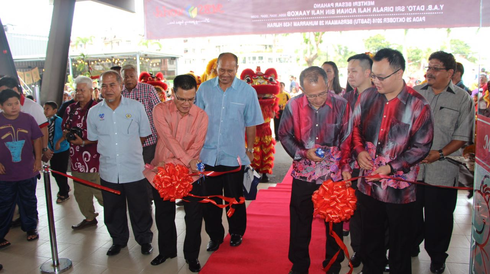
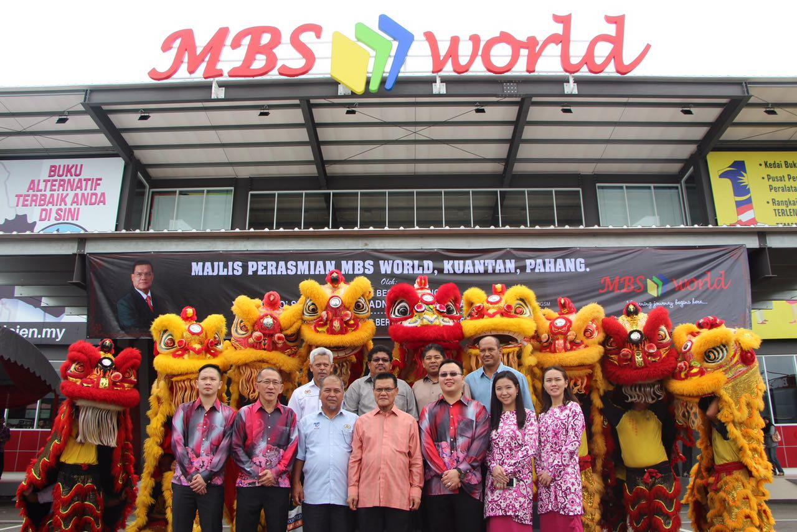
MBS 文具书业企业旗下全新旗舰店 MBS World Mega Bookstore 于关丹丹那布爹（GIANT霸市旁）举行盛大新张开幕志庆。彭亨州前任州务大臣拿督斯里安南耶谷亲率彭亨州教育局长罗斯迪、书业文具公会会长拿督郑东星等州政府高官显要亲临剪彩。
彭大臣在致词中高度肯定企业从小资本起家、坚毅不拔奋斗35载，投入资本增长逾 3000% 的傲人成就，盛赞华人脚踏实地、艰苦奋斗经商的典范精神，并勉励书店作为文化火种，持续推动全民阅读。
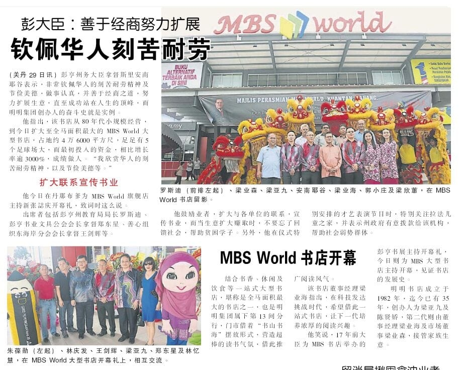
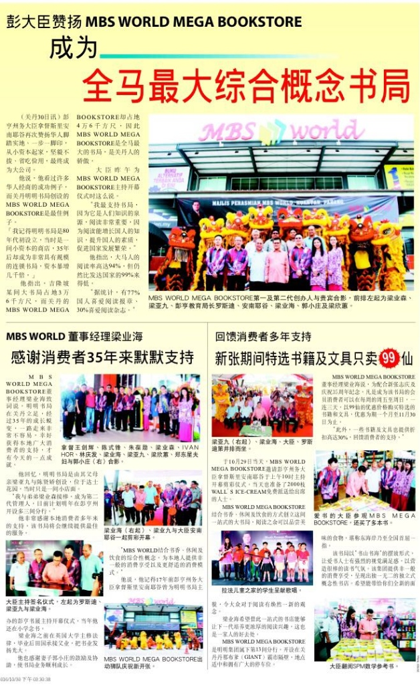
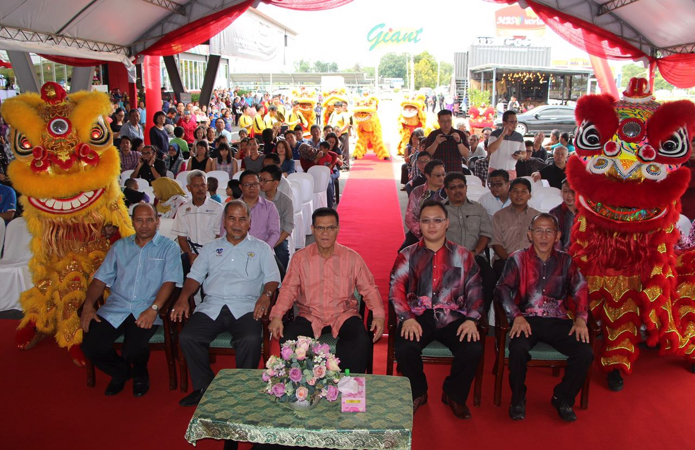
各大主流媒体对 MBS Books & Stationery 董事经理梁业海 进行了深度专访，全景揭秘其个人求学与商业励志经历：
- 法商兼备的高规格学术背景：梁业海毕业于英国西英国布里斯托大学（University of the West of England, Bristol），拥有英国法律系荣誉学士学位（LL.B Hons），并研修获得EMBA企业管理硕士学位。他具备严密的现代法商法治逻辑与宏观企业治理视野，为传统书业注入前沿管理智慧；
- 两代管理人薪火相传：书店最初由父母亲梁亚九与陈贤娇创设于达士花园，仅是一间小店面。梁业海与弟弟梁业森接棒成为第二代管理人，以现代法商管理机制为驱动，将家族企业成功跃升为跨州文教连锁品牌；
- 十七载跨时代渊源：梁业海感触回忆道，17年前大臣首次为主持开幕时自己尚在小学念书，17年后自己留学回国并打造出全马最大的综合书局，再次恭请大臣揭幕，见证了一部感人至深的实业成长奋斗史。
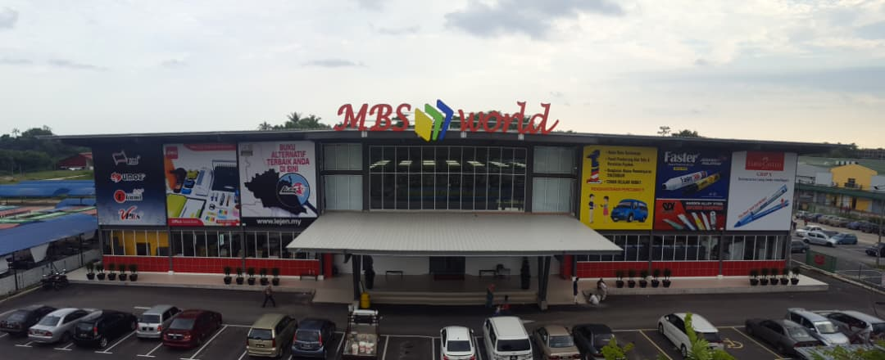
根据专题报道详述，MBS 文具书业企业通过 MBS World 打破了传统单调零售模式，为广大民众与下一代带来不可替代的诸多“好处与核心价值”：
- 全马首创“书香+休闲+饮食”综合概念：结合现代阅读、文具文创、轻食咖啡与休闲交流，创造独一无二的一站式（One-Stop）家庭复合生活体验；
- “书山书海”沉浸式空间美学：采用海量书架矩阵打造震撼视觉冲击，营造浓厚学术氛围，让读者“走得进、坐得下、读得进”，重塑数字化时代民众对纸质阅读的敬意；
- 地利与便利停车配套：紧邻丹那布爹主要交通主干道，毗邻大型霸市，配备海量专属停车位，彻底解决家庭出行与选购图书文具的停车痛点；
- 开业惠民 99 仙回馈：为回馈大众35年默默支持，新张期间特选图书文具仅售 99 仙，特价优惠达 30%，并向市民家庭免费派发 2000 支冰淇淋；
- 深耕慈善与帮扶儿童之家：开业特邀“拉法儿童之家（Rapha Children's Home）”院童表演献唱，并推动州政府与企业联合拨款关怀弱势孤儿。梁业海郑重承诺：“企业发展扩大盈利之时，绝不忘回馈社会，倾力资助贫困学子！”
公共政务、外交外事与社会公益纪实 (Public Affairs, Diplomacy & Community Impact)
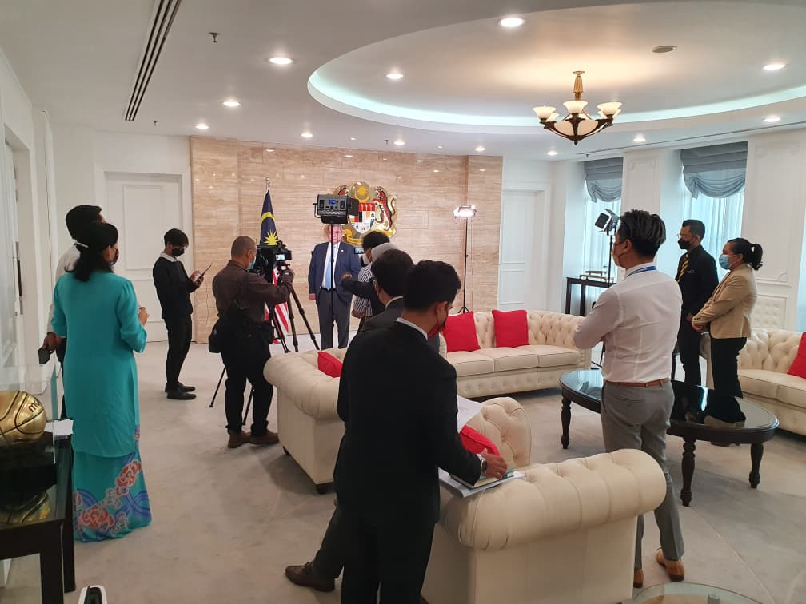
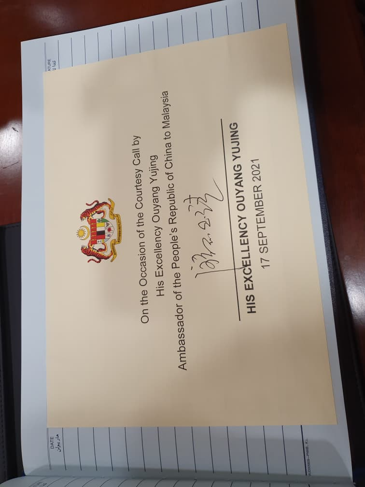
在担任马来西亚外交部事务官期间，梁业海协助时任外交部长拿督斯里赛夫丁·阿都拉处理涉华外事沟通与重要外交接待统筹：
- 参与见证高规格双边外交：2021年9月17日，中华人民共和国驻马来西亚特命全权大使欧阳玉靖阁下正式礼节性拜会马来西亚外交部（Wisma Putra），梁业海作为外长事务团队骨干参与迎宾与外事协调，见证了中马全面战略伙伴关系的巩固深化；
- 统领外交政策公关：列席外交部各项多边外事新闻通气会与内阁吹风会，以专业的法学与管理素养协助落实外宣事务。
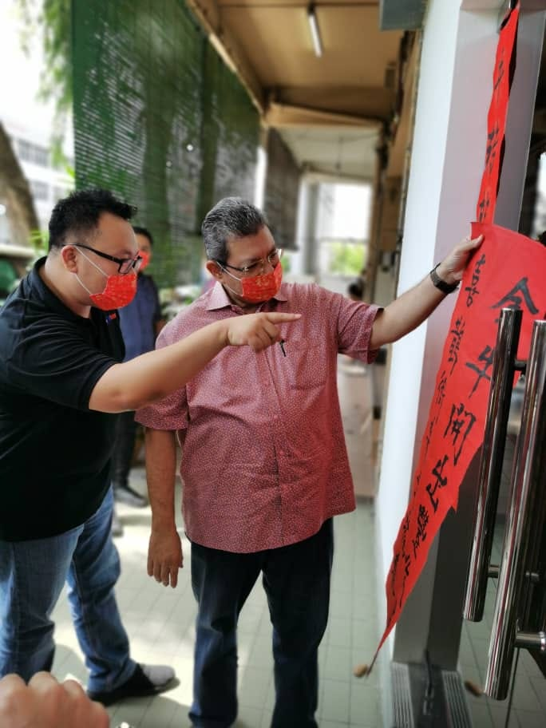
赛夫丁部长在正式委任新闻发布会上强调：“梁业海将扮演我与广大华裔居民之间的坚实桥梁角色，协助传达华裔居民的意见并全面办理各项事务。”
- 设立常态化社区关怀阵地：主持关丹社区关爱中心（士满慕分行），直接受理解答华人商户、文教机构与社区居民的实际民生诉求；
- 新春关怀走入千家万户：传统农历新年前夕，梁业海与部长亲自深入大街小巷向商户及独居老人派送新春福袋、张贴春联，凝聚华社睦邻温情；
- 传达草根心声：针对华裔面对的营商执照、水利建设及学校软硬件修缮等痛点，高效率向部长及政府行政部门反映，确保政策落地。
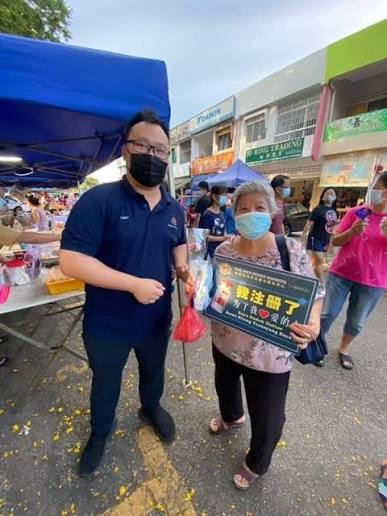
在国家全力推进新冠疫苗接种与基层抗疫的关键阶段，英迪拉马哥打国会服务中心士满慕分行在梁业海带领下，积极走入民间前线，开展常态化惠民纾困行动：
- 推动全民疫苗接种登记行动：深入关丹华人早市集市与商业街区，设立流动便民登记站，面对面协助长者及弱势群体跨越数字化鸿沟，顺利完成疫苗登记与接种安排；
- 火速驰援关丹中央医院前线：疫情暴发初期医疗防护装备告急，梁业海代表 MBS 筹措并紧急捐赠 3000 套防飞沫面罩原材料（A4透明塑片、海绵、热胶枪、钉书机等），全力保障医护人员生命安全；
- 常态化急难救助发放：在国会服务中心常设救助窗口，精准向受疫情冲击的失业工友、单亲家庭移交急难救济款项与生活物资。
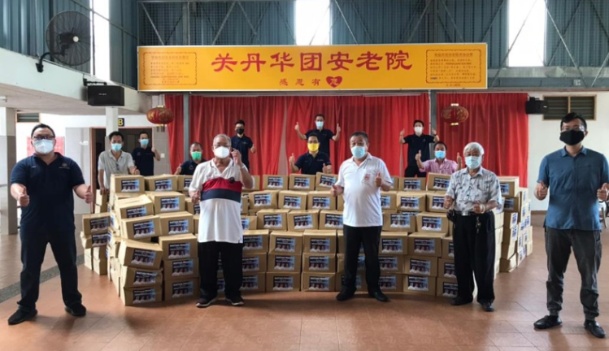
在严峻的行管令期间，关丹基层许多独居长者、单亲家庭与受疫情重创的日薪工友生计艰难。梁业海统筹协调各方救灾资金与物资链，发起大规模“爱心粮食援助计划”：
- 覆盖全关丹72大华裔乡团：梁业海代表部长服务团队，在关丹华团老人院正式将 720 份饱含生活主食与日用品的爱心食物篮交接予关丹华团联合会（由署理主席梁永康代领）；
- 扁平化精准下沉发放：借助关丹华联会 72 个乡团熟知各籍贯会员生活实况的深厚网络，确保救济粮逐家逐户送到最需要的困难乡亲手中；
- 深化政民社团互信：强化了政府高层与地方华社最高代表机构之间的紧密互信，成为地方民间与政界协同抗灾的经典范例。
梁业海高度认同“青少年是国家未来的主人翁”的理念，关注新生代的身心韧性与兴趣社团健康发展。疫情阻碍线下课堂期间，不少地方体育与武术班生源流失、经营面临严峻瓶颈：
- 专项财政驰援武术老牌名社：梁业海代表移交资助款项予关丹环球跆拳道公会，由德高望重的黑带九段洪棋华总教练亲自代领；
- 缓解营运压力，留存培训火种：有效纾解了协会因疫情停课导致的租金及教职开销压力，确保基层教练队伍稳定；
- 倡导多元发展平台：鼓励青少年多参与健康有益的文体社团锻炼体魄、磨砺意志，远离不良诱惑，为州与国家培育栋梁之材。
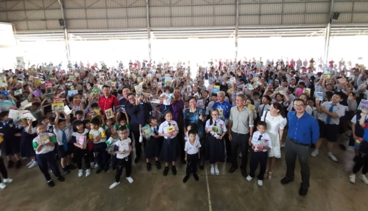
立足马中友好大局与华文图书事业根基，梁业海充分发挥马中总商会商务主任职能与 MBS 文具书业企业的图书平台优势，大力促进马中文教双向交流：
- “百柜工程·悦读浙江”走出去工程：配合中国浙江省重点走出去文化规划，向关丹阿亦布爹中学赠送价值 8000 令吉的优质图书与精装调木书架，向本土华裔青年弘扬中华传统文化；
- “阅读上海”书箱进校园：携手中国上海文化使者杨棣与上海书局，在关丹光华华小等校设立“随手取阅、互借互换”的阅读书箱，并促成与关丹县教育局签署联合阅读推进备忘录；
- 长年关照华教发展：长期出任关丹培才华小家教协会副主席，多届参与“重返校园”助学行动，捐助学生桌椅与文具教材，让书香润泽校园。
主要公开信源与媒体报道索引 (Public References & Citations)
- 📰 《中国报》：彭大臣主持 MBS World 开幕，赞扬为全马最大综合概念书店
- 📰 《南洋商报》：MBS World 董事经理梁业海专访：英国法律系荣誉学士学成回国传承父业
- 🏛️ 马来西亚外交部官方档案：中国驻马大使欧阳玉靖阁下正式拜会外长名录 (2021)
- 🏛️ 彭亨州务大臣公署：现任大臣旺罗斯迪接见商讨《彭亨关怀折扣卡 (Kad Diskaun Pahang 1Prihatin)》
- 📰 《中国报》：梁业海获委任为华社事务官新闻专访
- 📰 《星洲日报》：代表移交720份食物篮予关丹72乡团纪实
- 📰 《南洋商报》：MBS 捐赠“悦读浙江”书架予阿亦布爹中学
- 📰 《中国报》：MBS 捐献数千套防护面罩物资驰援中央医院
- 🌐 马中总商会 (MCCC)：彭亨分会商务主任官方名录
- 📰 《星洲日报》：上海文化使者走访关丹光华华小共推书箱计划
- 📰 《中国报》：走访关丹环球跆拳道公会移交青年扶助资金
- 📰 《南洋商报》：防范罪案基金会探访柏诺监狱开放日活动纪实